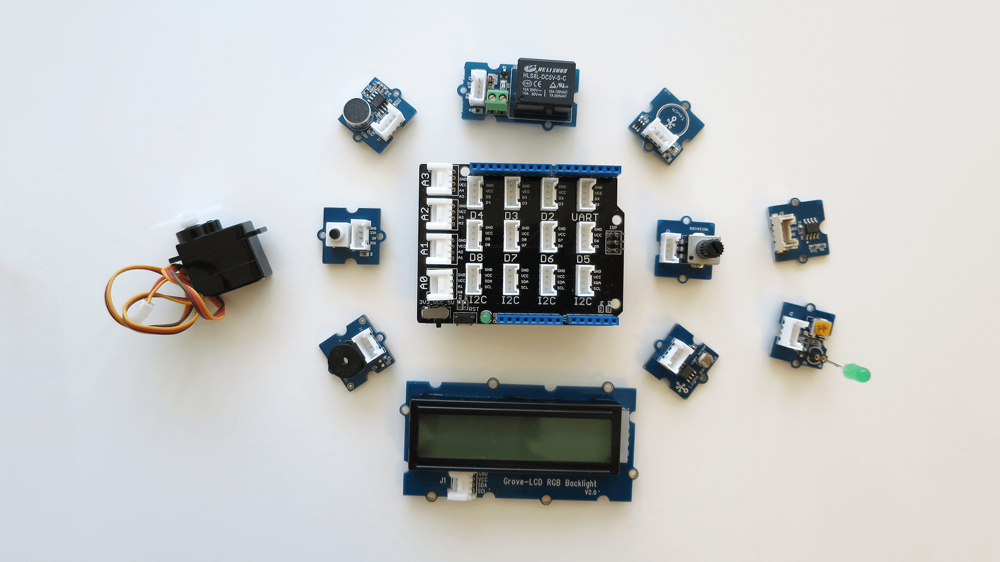

Create Intel® IoT projects with the Grove Starter Kit
The Grove System is an easy to use group of modules that minimise the effort required to get started with microcontroller-based experimentation and learning. Intel® has partnered with Seeed, the creators of Grove, to distribute the Grove Starter Kit Plus - Intel IoT Edition which contains essential sensor and actuator modules to jump start your IoT prototyping.

This guide will demonstrate how you can use the Grove Starter Kit with any Intel® IoT board to go beyond blinking the onboard LED.
Inside the Grove Starter Kit box
Find out what sensors and actuators are in your Grove Starter Kit.
Install the Grove Base Shield
Arduino “shields” are add-ons that plug into standard Arduino header pin configurations. Install the Grove Base Shield onto your Intel® Edison to easily connect to Grove components without having to use an additional prototyping area such as a breadboard.
Connect a Grove component
All components in the Grove System use a 4-pin cable with JST connectors. This allows you to prototype without having to individually learn how to wire up each unique component.
You now know the basics about the Grove Starter Kit. Try code samples for the IDE you installed.